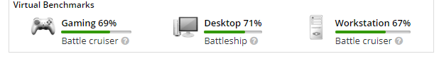

Voorbereiding
Doel
Als allereerste bij het samenstellen van een computer moet je kijken waar je de computer voor wilt gaan gebruiken, zo kan dat zijn voor fotoshoppen, video editen, dagelijks gebruik, gamen, etc. Er zijn 3 criteria in de krachten van computers: Gaming, Workstation en Desktop. Bij Gaming kijk je naar hoe goed je computer games en andere virtuele taken kan uitvoeren. Bij Workstation kijk je naar hoe goed je computer taken als photoshoppen en video editen kan uitvoeren. Bij Desktop kijk je naar hoe goed je computer taken zoals tekstbestanden en webbrowsen kan uitvoeren, maar je hoeft hier niet echt op te letten aangezien dit altijd wel redelijk goed zal zijn.
Tweakers
Als je hebt gekozen waar je je computer voor wilt gaan gebruiken, dan kun je verder gaan naar de volgende stap; ga naar Tweakers.net, als je daar aankomt moet je rechts bovenin klikken op inloggen en dan op registreren, heb je al een Tweakers account? Dan kan je deze stap overslaan. Maar zo niet, maak dan eerst een account aan.
Als je eenmaal het account hebt kun je gaan naar ‘Pricewatch’, als je daar bent klik dan op ‘Componenten en randapparatuur’, en klik daarna op 'Basiscomponenten’. Dit is waar je de componenten zal vinden die je nodig zal hebben. Als je dus bijvoorbeeld naar processors wilt gaan kijken kan je klikken op 'Processors’, dan krijg je alle processors die je in Nederland kan kopen te zien, met al hun prijzen en alle specificaties. In de kolom links kan je dan heel veel verschillende filters instellen van prijs tot zeer specifieke specificaties.
Als je een product vind dat je leuk vind kan je klikken op ‘Hebben’ en dan kan je een nieuw lijst aanmaken, die kan je dan noemen wat je wilt. Deze lijsten kan je later weer op zoeken door te klikken op 'Account’ en dan 'Inventaris’.
Dit is de voorbereiding van het samenstellen van computeronderdelen, je kan nu doorgaan naar CPU kiezen.